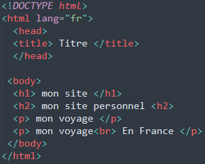

Pour démarrer, la première étape va être de créer le fichier HTML qui contiendra votre code HTML. Je vous conseil Sublime Text pour cela
Ce fichier devra avoir l’extension .html pour définir que c’est un fichier HTML. Dans notre cas, nous le nommerons « index.html » mais pour débuter vous pouvez le nommer comme vous le souhaitez tant que l’extension est .html : « test.html » ou « main.html » par exemple.
Les balises sont au cœur du langage HTML, se sont elles qui vont vous permettre de structurer vos pages. Ces balises se composent toutes de 2 éléments au minimum :
- 2 chevrons (un ouvrant et un fermant)
- un nom.
Une balise se définit ainsi, où « balise » est le nom de la balise : balise
Il existe cependant 2 types distincts de balises, les balises qui fonctionnent par paire et celles qui sont « orphelines ».
Ces balises sont utilisées par paire car elles encadrent un contenu (texte, d’autres balises,…).
La deuxième balise a une spécificité, elle contiendra toujours un / après le chevron ouvrant. Cela permet d’indiquer la fin de l’encadrement. Dans notre cas, notre titre est ce qui est contenu entre les deux balises title, mais tout ce qui sera avant ou après ces balises ne sera pas un titre.
Voyons à quoi ressemblerait notre fichier « index.html » et son texte, avec les structures de base d’une page web :

Par exemple, la balise html qui est ouverte avant la balise head se ferme avec seulement après que la balise head ne soit écrite. Cet ordre est important à respecter, si vous fermez une balise avant que toutes les balises contenues dans cette première balise ne soient fermées votre site ne fonctionne pas.
Avec ces premiers éléments vous allez pouvoir créer la base de votre page web qui sera interprétable par n’importe quel navigateur web (Chrome, Safari, , Firefox, Microsoft Edge, …).
La prochaine étape sera d’apprendre à mettre en page vos contenus HTML, en découvrant les bases du CSS.
La création d’un site web peut être compliqué. Si la technique ne vous intéresse pas ou si vous n’avez pas le temps d’apprendre les différents langages, n’hésitez pas à poster une annonce gratuite sur Codeur.com pour trouver rapidement l’aide d’un freelance qui pourra vous aider.